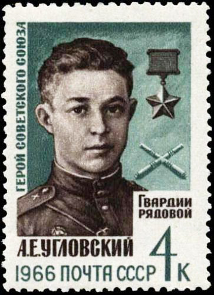

Угловский Анатолий Ефимович — номер расчёта противотанкового ружья 429-го истребительно-противотанкового дивизиона (306-я стрелковая дивизия, 43-я армия, 1-й Прибалтийский фронт), красноармеец.
Родился 24 июля 1923 года в деревне Лужевица ныне Великоустюгского района Вологодской области в крестьянской семье. Русский. В 1939 году окончил 7-й класс школы в селе Пеганово (ныне – Нижнешарденгская основная общеобразовательная школа), в апреле 1942 года – ремесленное училище № 4 (ныне – профессиональное училище № 3) в городе Великий Устюг. Работал на узле связи в городе Кашин Калининской области надсмотрщиком линий связи.
Призван в армию в 1942 году. Сражался на Волховском и Калининском фронтах. Участвовал в обороне Ленинграда и в боях за город Великие Луки. Был ранен. После излечения в госпиталe прибыл в 306-ю стрелковую дивизию 43-й армии Калининского (с 20 октября 1943 года – 1-го Прибалтийского) фронта.
Участвовал в Духовщинско-Демидовской наступательной операции (14 сентября – 2 октября 1943 года, в ходе которой 306-я стрелковая дивизия освободила сильно укреплённый опорный пункт противника – деревню Рибшево Духовщинского района Смоленской области (15 сентября), за что получила наименование Рибшевской. Затем участвовал в освобождении Витебской области Белорусской ССР.
Отличился в бою 20 декабря 1943 года у деревни Холудное Яновичского района на шоссе Сураж – Витебск. При отражении контратаки противника двумя противотанковыми гранатами подбил головной вражеский танк, чем сорвал контратаку. При этом погиб.
Первоначально был похоронен в братской могиле на юго-западной окраине деревни
Холудное*. Перезахоронен (увековечен) в братской могиле в деревне Вымно Витебского
района Витебской области.
Указом Президиума Верховного Совета СССР от 4 июня 1944 года за образцовое выполнение боевых заданий командования на фронте борьбы с
немецкими захватчиками и проявленные при этом отвагу и геройство, красноармейцу Угловскому Анатолию Ефимовичу посмертно присвоено звание Героя Советского Союза.
Награждён орденом Ленина.
Имя Героя навечно занесено в списки воинской части. У шоссе Сураж-Витебск ему установлен памятник работы скульптора А.И.Гвоздикова.
В городе Великий Устюг на стеле памятника Героям Великой Отечественной войны прикреплена мемориальная плита с его именем. Имя Героя носят улицы в Великом Устюге, посёлке городского типа Лиозно Витебской области, деревне Вымно, городе Кашин, совхоз в Витебском районе, Нижнешарденгская основная общеобразовательная школа в селе Пеганово. Имя А.Е.Угловского присвоено также теплоходу, в его честь выпущена почтовая марка. На узле связи в городе Кашин, школе в Пеганово установлены мемориальные доски.
Из наградного листа 20 декабря 1943 года на шоссе Сураж-Витебск шли ожесточенные бои. Особенно тяжелые бои проходили в районе действий 429-го истребительно-противотанкового дивизиона. Вражеские танки, в том числе и типа «тигр», прорвавшись через боевые порядки пехоты 938-го стрелкового полка 306-й стрелковой дивизии, создавали критическое положение для нашей пехоты и ставили под угрозу срыва выполнение боевой задачи.
Потеря нескольких танков не остановила врага, танки продолжали двигаться.
Головной танк врага приближался к позиции расчета бронебойщика Угловского. Расчет не растерялся, открыл огонь, но вражеский танк стремительно двигался вперед.
Когда танк находился в 30 метрах от расчета, в единоборство с фашистским стальным чудовищем вступил гвардеец Анатолий Угловский. Он схватил две противотанковые гранаты, поднялся навстречу фашистскому танку и со словами «Не пройдешь, фашистский гад!» первую гранату бросил под днище танка, а вторую – под гусеницу.
Танк был подбит, но смертью героя пал и сам Угловский. Остальные танки, видя гибель головного, отказались от дальнейшей атаки и повернули назад.
Героическим подвигом рядовой Угловский оставил о себе неувядаемую славу, позволяющую поставить его в ряды бессмертных героев Отечественной войны.
За проявленное мужество и геройство в боях за Родину Военный Совет фронт ходатайствует о присвоении Угловскому посмертно звания «Герой Советского Союза», а 429-му противотанковому дивизиону просим присвоить имя гвардии рядового Анатолия Ефимовича Угловского с зачислением его навечно в списки части.
Командующий войсками Первого Прибалтийского фронта гвардии генерал армии Баграмян
Член Военного Совета Первого Прибалтийского фронта генерал-лейтенант Леонов
9 февраля 1944 года
Среди славных имен героев Великой Отечественной войны навеки останется в памяти благодарного человечества имя комсомольца гвардии рядового Анатолия Угловского. Его подвиг будет вечным примером служения матери-Родине. Читатель, послушай, как это было! Перенеси свои мысли к окопу, навсегда прославленному солдатской доблестью героя-бронебойщика.
3има 1943 года. В Белоруссии, на полпути от Витебска до Сурожа, враг предпринял жестокую контратаку. Загрохотала фашистская артиллерия. С отдаленных холмов на позиции бронебойщиков, стреляя из пушек и пулеметов, ринулись вражеские танки. Они быстро приближались.
В голове колонны тяжело двигался фашистский «тигр». Угловский и его друзья-бронебойщики открыли по нему огонь из противотанковых ружей. Однако мощная лобовая броня не поддавалась. Танк продолжал лезть прямо на окоп. Еще мгновение, и «тигр» прорвется на позиции пехотинцев.
Нет, не может комсомолец Угловский пропустить врага! Он вспомнил подвиг героев-панфиловцев, не пропустивших вражеских танков к Москве, Александра Матросова, закрывшего своим телом амбразуру вражеского дзота. В грохоте боя ему послышался священный призыв матери-Родины: «Держись и побеждай!»
Схватив две противотанковые гранаты, Угловский поднялся из окопа и пошел навстречу танку. Начался невиданный поединок человека со стальным чудовищем. Казалось, все вокруг замерло в ожидании исхода этой борьбы.
Когда до танка осталось тридцать метров, Угловский метнул гранату. Она разорвалась под днищем. «Тигр», грозно рыча моторами, лязгая гусеницами, продолжал идти вперед. Он двигался, чтобы раздавить своей тяжестью воина, дерзнувшего встать на его пути. Наступали страшные секунды развязки.
Надо иметь стальную волю, душу русского человека и непоколебимую веру в победу, чтобы выдержать такое испытание. Анатолий Угловский его выдержал. Не дрогнуло комсомольское сердце.
– Не пропущу! – повторил Угловский. Как сказочный богатырь, он продолжал идти навстречу врагу. Когда расстояние сократилось до пяти метров, бронебойщик метнул под танк вторую гранату. Раздался взрыв. Фашистский «тигр» вздрогнул, сполз с оборвавшейся гусеницы и катками зарылся в землю.
Другие вражеские машины повернули обратно. Воодушевленные беспримерным подвигом своего товарища, наши пехотинцы ринулись за следовавшими за танками гитлеровцами и обратили их в бегство. Вражеская атака была отбита. В этом бою богатырь-бронебойщик пал смертью храбрых.
За мужество и геройство в боях за Родину Президиум Верховного Совета СССР удостоил Анатолия Ефимовича Угловского высокого звания Героя Советского Союза.